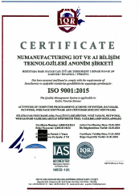
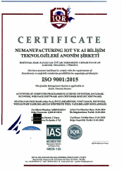
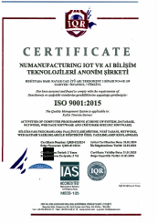
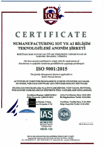

Our product
BESTEKAR 4.X AI/ML-BASED Predictive Maintance Platform

NumBox Sensor Array
 
 SUSTAINABILITY 4.X (BEREKET 4.X) Efficiency Analysis Platform
 

As NuManufacturing, we value ESG (Environment- Society-Governance) principles as well as sustainability in all processes.
Therefore, while the economic/fiscal branch of production cycles and systems seem to get negatively affected in times of maintenance need and failures, we impact their economics positively by providing a sustainable service.
Enviroment
Society
Economy


Collecting data in a non-intrusive manner
Predicts and early detects equipment failure
Provides actionable insights

Allows real-time, informed decision-making.

Increase factory yield


Determination of the optimum fermentation model by determining the chemical composition and status of the ingredients
Detection of micro-scale scratches on packaging, glass bottles and plastics
Real-time measurement of moisture, sugar and protein values of raw materials used in the food industry
A digital twin is a virtual representation of real-world entities and processes synchronized at a specified frequency and fidelity.
Digital twin systems transform businesses by accelerating holistic understanding, optimal decision-making, and effective action.
Digital twins use real-time and historical data to represent the past and present and stimulate predicted futures. They are motivated by outcomes and tailored to use cases, powered by integration, built by data, guided by domain knowledge, and implemented in IT/OT systems.
Layerd Architecture
Integrated Platform
 Maintenance and Failure Predictions in Transformers
Maintenance and Failure Predictions in Transformers
 Public Transport Trip Analysis
Public Transport Trip Analysis
Gaziantep Model Factory
London Underground Passenger Forecast